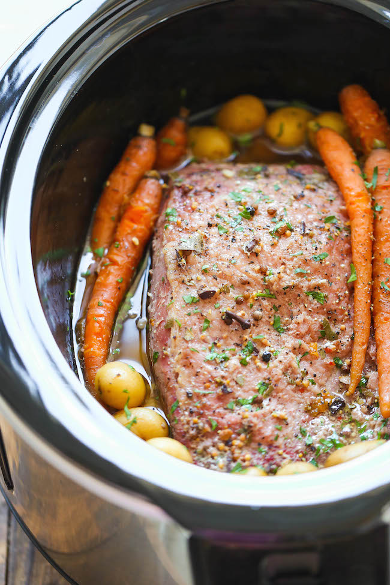

Corned Beef

Slow Cooker Corned Beef
Skip the stove top boil and the oven roast; the slow cooker does all the work here and makes the corned beef fall-apart tender. All you need is some Irish soda bread to serve alongside.
Ingredients
- ½ pound baby carrots
- ½ pound small yellow potatoes (such as Dutch Yellow® Pee Wee potatoes)
- 1 sweet onion, cut into bite-size pieces
- 4 cups water
- 4¾ pounds corned beef brisket with spice packet
- 3 tablespoons onion powder
- 3 tablespoons garlic powder
- 1 bottle Irish stout beer (such as Guinness®)
- 1 medium head cabbage, quartered and leaves separated
Steps
- Spread baby carrots, potatoes, and onion into the bottom of a slow cooker crock. Pour water over the vegetables.
- Season the lean side of the corned beef brisket with onion powder and garlic powder. Set seasoned brisket onto the vegetables with the fatty side facing upwards. Pour beer over the brisket. Sprinkle contents of the spice packet over the brisket.
- Cook on Low for 10 hours.
- Remove brisket to a cutting board. Stir cabbage into the liquid and vegetable mixture remaining in the slow cooker.
- Cook cabbage on High until tender, 30 to 45 minutes.
- Slice corned beef and serve with cabbage mixture.